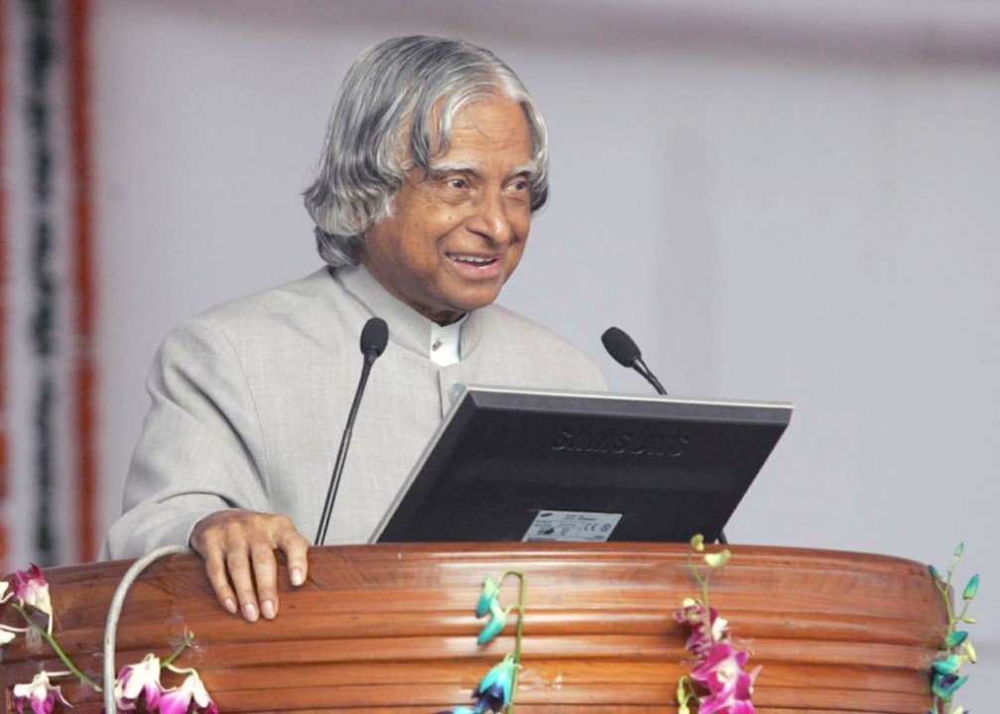

Dr. A.P.J. Abdul Kalam
1931 – 2015
“Dreams are not what you see in sleep. Dreams are something that do not let you sleep.”
Biography
Dr. A.P.J. Abdul Kalam was an Indian aerospace scientist, educator, and the 11th President of India. Known as the "Missile Man of India," he played a key role in India's missile and nuclear programs. After serving as President from 2002 to 2007, he dedicated his life to inspiring youth and promoting education. His humility, vision, and dedication to the nation made him one of the most beloved leaders in Indian history.